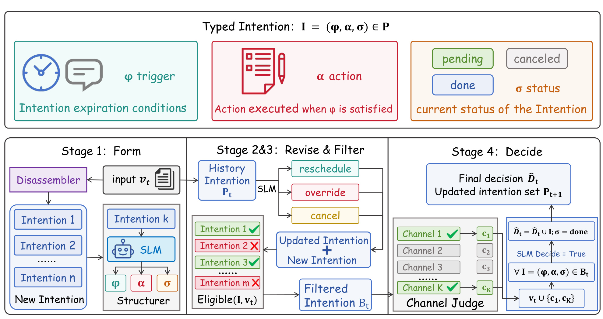
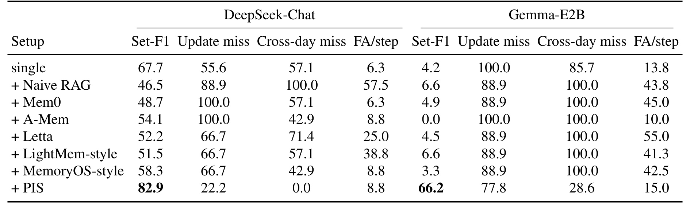
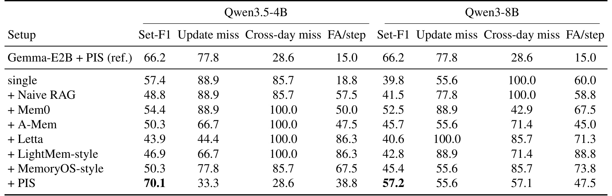
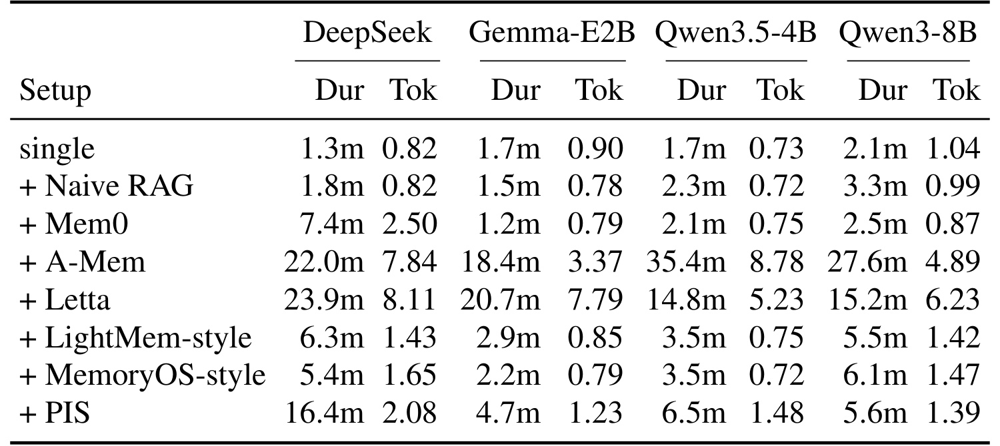

Making Prospective Memory SLM-Shaped: Typed Intention Stores for Small-Model Agents / 让前瞻记忆适合小模型：小模型智能体的类型化意图存储
Jinqing Zhao 与 Chengcan Wu 均来自北京大学。论文于 2026 年 9 月 1 日公开，当前是注明“投稿 NeurIPS 2026”的非归档工作稿，不能据此视为已接收。论文入口为 arXiv:2609.01272。正文称方法与代码将在论文接收后发布，本轮未核验到可访问的独立仓库。
前瞻记忆要求智能体在其他工作持续推进时，仍能等到正确的未来线索再执行延迟意图；但现有记忆系统主要检索过去，既不显式维护可撤销、可改期的承诺，也不判断此刻究竟有哪些动作到期。把整套生命周期塞进开放式 JSON 推理又会压垮小模型。
1. 背景和问题
本文研究智能体的前瞻记忆（prospective memory，PM），提出无训练的 Prospective Intention Store（PIS）。语言智能体从一次性问答走向规划、工具使用和跨会话协作之后，“记得什么”不再只是把历史文本召回给模型。用户可能先说“门户开放时替我提交申请”，随后去处理别的事项；几小时或几天后，系统需要主动检查门户状态，并在条件满足时执行先前承诺。这里要保存的不是一条静态事实，而是一个带未来触发条件、待执行动作和生命周期状态的承诺。认知科学把这种在恰当未来线索出现时完成延迟意图的能力称为前瞻记忆，与回忆过去事实的回溯记忆相区分。
当前多数 Agent memory 仍沿着“写入笔记—更新或合并条目—按当前查询检索相关内容”的路径工作，Mem0、A-Mem、Letta/MemGPT、LightMem、MemoryOS 等都主要优化过去条目与当前查询的相关性。相似度检索可以回答“之前讨论过什么”，却没有自然表示“何时到期、条件被改写后哪条旧承诺失效、动作执行后怎样标记完成”。尤其是取消、改期和覆盖都要求对存储对象做结构化状态转移；如果仍把每个旧版本当作文本片段召回，过期承诺很容易继续触发，形成 false alarm。跨日任务还要求意图在场景切换后保持可见，而不是只依赖不断增长的对话上下文。
前瞻记忆还多了一层“观察”问题。很多触发条件不会自动写进对话，例如门户是否开放、传感器是否越界、邮箱是否收到回复。智能体若只被动等待当前文本包含线索，就永远无法判断条件是否满足；它必须先从待处理承诺中知道该检查哪个外部通道，再把查询结果并入证据。论文据此把 conditioned delayed memory 拆成三个回溯检索不具备的循环：更新承诺的 Update、选出到期动作集合的 Decision，以及扩展时钟和外部通道证据的 Observation。PM-Bench 用七天合成活动、匿名动作菜单、诱饵动作和隐藏状态通道隔离评测这种能力，并以每一步预测动作集合与真实到期集合的 micro Set-F1 为主指标。
作者的第二个问题是：完成这些循环是否必须依赖更大的模型或专门训练？既有 Memory×SLM 工作证明小模型能处理 selector、writer 或过程记忆，但往往需要 selector LoRA、教师轨迹或学生适配器。论文观察到，大量记忆操作其实只是槽位抽取、短判断和稀疏 JSON 修改；当工具接口和动作空间有明确类型时，1B–7B 模型已经能稳定执行类似受约束调用。因此，PIS 的出发点不是让小模型在长文本中进行更强的开放推理，而是把它不擅长的生命周期和集合操作移到代码中，只让模型完成必须依靠语言语义的局部判断。
这也界定了论文的核心研究问题：能否把延迟承诺表示成显式类型，把“新建、修订、筛选、观察、执行、完成”变为可审计的操作边界，并在冻结骨干、无 selector 微调、无轨迹蒸馏的条件下，让小模型在 PM-Bench 上可靠工作？论文的贡献主要是形式化前瞻意图对象与 due set、给出 Form–Revise–Filter–Decide 脚手架，并在 DeepSeek-Chat、Gemma-E2B、Qwen3.5-4B 和 Qwen3-8B 上与无存储及七种回溯记忆方案比较。要注意，这是一篇仅 8 页的工作稿，证据集中在单一合成基准；它展示的是“结构化脚手架能显著改善该任务”，而不是已经证明真实个人助理中的长期安全性。
2. 方法
2.1 类型化意图、证据与到期集合
在离散步骤 $t$，智能体接收当前证据 $V_t$ 和候选动作菜单 $X_t$，并维护外部意图集合 $P_t$。每条意图被写成三元组 $I=(\varphi,\alpha,\sigma)$：$\varphi$ 是触发条件，$\alpha$ 是将来应执行的动作，$\sigma\in\{\mathrm{pending},\mathrm{done},\mathrm{canceled}\}$ 是状态。系统每一步既要输出预测到期动作集合，也要更新存储，论文用两个接口把职责分开：
符号解释：$\pi$ 是从存储和证据到动作集合的决策算子，$F$ 是把新输入、修订和执行结果提交回存储的状态转移，$\widehat{D}_t$ 是系统预测此刻应该执行的动作集合。将二者分开很重要：一个动作是否到期属于决策问题，而它执行后是否改为 done 属于状态一致性问题，不能靠下一轮模型“回忆”完成。理想到期集合由显式条件给出：
符号解释：$D_t^\star$ 收集所有仍为 pending 且触发条件在当前证据下成立的动作；$V_t\models\varphi$ 表示证据满足条件。时钟条件可以由规则判断，事件和外部通道条件则在证据齐备后交给语言模型。这个定义把评测对象从“检索到相似记忆”改成“预测一个准确的动作集合”：漏掉一个到期动作会降低召回，执行一个诱饵或过期动作会降低精确率。

Figure 1 的上半部分把意图字段与职责直接对应：$\varphi$ 描述到期线索，$\alpha$ 保存条件满足时的动作，$\sigma$ 则阻止 canceled 或 done 条目再次执行。下半部分是单步数据流。Form 从新输入中拆出一个或多个承诺并填充字段；Revise 对历史 pending 条目做改期、覆盖或取消；Filter 依据时钟、范围与离散标签建立资格板 $B_t$。若资格板引用了门户、邮箱或传感器等隐藏通道，channel judge 先要求查询，回复再进入 $V_t$；最后 Decide 在动作菜单内输出 $\widehat{D}_t$，并把真正执行的条目提交为 done。图中最关键的边界不是“使用了几个模型调用”，而是生命周期和集合合并由代码执行，SLM 只给出受约束语义判断。这样既降低开放状态机的自由度，也让错误可以归因到具体算子。
从状态不变量看，三元组设计至少保护了三件事。其一，只有 pending 行能进入理想到期集合，已完成或取消的动作不会因为文本再次相似而复活；其二，动作集合受 $X_t$ 约束，语言模型不能自由生成一个环境不存在的工具动作；其三，触发满足与状态提交是两步，系统可以在执行前用 guard 再验证权限或环境。论文没有把这些不变量写成形式化安全证明，但接口已经给出可实现的检查位置。相比把完整历史直接塞回提示词，这种外部状态还能显式追踪“哪条意图、因何证据、在何时从 pending 变成 done”，为真实系统的审计日志保留结构。
2.2 Form 与 Revise：把开放文本压入稀疏补丁
Form 是开放叙事进入类型系统的唯一入口。Disassemble 从 $V_t$ 中找出承诺片段，Structure 把每个片段填入触发条件、动作和 pending 状态；二者可以由一次模型调用共同完成。集合并入与合法槽位组装由代码负责：
符号解释：$s$ 是抽出的承诺文本片段，$\Delta_t^{\mathrm{form}}$ 是本步新建的类型化意图集合。模型只负责识别“什么时候做什么”，代码负责把记录合入存储。 若一句话同时包含多个未来动作，Disassemble 必须拆开；若条件或动作不完整，系统应保守地保留不确定性，而不是臆造一个可立即执行的承诺。论文没有给出专门训练数据，PIS 在推理期以提示和接口约束完成这一过程。
Revise 不是再做一次相似度检索，而是对已有 pending 条目做 belief update。实现先缩小候选集合，再让一个带索引的 judge 输出稀疏 patch；没有更新片段就返回空 patch。触发线索出现不等于取消承诺。对单条意图，更新只有四种合法结果：
符号解释：$\rho_t$ 是修订算子；$\varphi'$ 表示改期后的条件，$\alpha'$ 表示被覆盖的新动作。触发线索只是供 Filter/Decide 判断 $V_t\models\varphi$ 的证据。如果把“用户提到了原日期”误解为 cancel，系统会在真正到期前删除任务；如果把覆盖写成新建而不失效旧动作，则会在同一线索下执行两次。 稀疏 patch 加代码应用的设计把这种错误暴露在明确字段上，优于让小模型重写整个 JSON 存储。
2.3 Filter、Observation 与 Decide：从资格板到提交状态
Filter 先做结构性缩减，只保留 pending 且当前可能相关的意图。资格判断可检查日期范围、精确时钟匹配以及离散事件/通道标签：
符号解释：$B_t$ 是资格板，不是 $V_t$ 的向量近邻集合。对于依赖隐藏通道但尚未查询的意图，Filter 不能因为当前证据为空而丢弃，反而要将其保留为 check target。此处将“可能需要观察”和“已经满足条件”分离，是 PIS 能处理门户、邮箱和传感器线索的关键。
Algorithm 1 把单步执行顺序固定为 Form、Revise、Filter，随后让 channel judge 在 $B_t$ 上循环请求必要通道 $c\in C_t$，并将回复合入 $V_t$，直到证据足够再调用 Decide。菜单约束减少小模型生成不存在动作的空间。Decide 的接口为：
符号解释：输出动作必须来自当前候选菜单 $X_t$，更新后的 $P_{t+1}$ 与动作集合一起产生。主动 Observation 避免“没有看到线索所以不执行”的被动失败。不过每次通道检查都会增加延迟和 token，错误的 channel judge 也可能漏查真正相关的来源，这些代价会在实验表 3 中显现。
当某个 pending 动作真正进入 $\widehat{D}_t$ 且 guard 允许执行时，代码用提交算子标记完成；这个状态变更不会留给下一轮模型自行回忆：
符号解释：$\kappa$ 是决定后的确定性状态提交，guard 表示执行前的结构化保护条件。至此，训练与推理的区别非常清楚：论文没有 selector 微调、PEFT 或教师轨迹蒸馏，所有骨干冻结；推理时仍需 Form、Revise、语言条件判断、channel judge 和 Decide，而 Filter、集合并入及 $\kappa$ 由代码持续存在。PIS 的能力来自类型化对象与算子分工，不等于小模型本身获得了通用的长期规划能力。
四算子的误差传播也值得单独梳理。Form 若漏抽承诺，后续任何检索或观察都无法补回；若错误拆成两条，可能产生重复动作。Revise 若补丁索引错位，会修改另一条承诺，其危害比单次判断错误更持久。Filter 若过早排除依赖隐藏通道的行，channel judge 根本没有机会发起查询；若过滤过宽，则资格板膨胀并增加 token 与误报。Decide 的错误直接进入 $\widehat{D}_t$，而 $\kappa$ 又可能把误选动作标成 done。因此，工程实现不能只记录最终 Set-F1，还应保存每个算子的输入、输出和补丁版本。论文在算法层给出了这种分界，但尚未用逐算子消融或错误计数验证每个边界的独立贡献。
3. 实验结果
3.1 数据、对照与指标口径
实验只使用公开的 PM-Bench synthetic week：七个模拟日中，智能体持续面对活动选择、匿名的 prospective action menu、用于诱导误触发的 lure actions，以及只有主动查询才能看到的 hidden state channels。主指标 Set-F1 是所有步骤上预测到期集合与真实到期集合的 micro F1，越高越好。三项错误诊断均越低越好：Update miss 衡量改期、取消和覆盖相关切片中的遗漏；Cross-day miss 衡量在更早日期植入、到今天才应执行的意图被漏掉的比例；FA/step 是每个决策步骤的平均误报数。
作者固定所有模型骨干，不做 selector LoRA、教师轨迹蒸馏或 PEFT。对照包括 single 无存储基线，以及 Naive RAG、Mem0、A-Mem、Letta、LightMem-style、MemoryOS-style 七种回溯设置。这里需严格区分实现口径：论文说明 LightMem-style 与 MemoryOS-style 是依照相应检索设计构造的 pattern adapters，并非运行完整上游服务器；single 则只依赖正在进行的对话上下文。因而表格能比较“在这套复现下，不同记忆接口如何影响 PM-Bench”，不能直接外推为各开源系统的全面产品性能。
四个指标必须联合读取。Set-F1 把所有步骤上的动作集合合并为 micro 统计，适合衡量总体到期决策，却可能让数量较多的普通步骤掩盖稀少而关键的改期或跨日案例；Update miss 与 Cross-day miss 正是为这两个切片补充诊断。FA/step 则把“多做了不该做的动作”单独显露出来，对提醒类系统只是打扰，对支付或外部写操作却可能是严重事故。论文未报告置信区间、多随机种子方差和按动作风险加权结果，因此数值差距可以用于比较这次实验，但不能给出可靠性上界。
3.2 DeepSeek-Chat 与 Gemma-E2B 主结果

Table 1 显示，DeepSeek-Chat+PIS 的 Set-F1 为 82.9，高于 single 的 67.7 和所有回溯记忆的 46.5–58.3；相对 single 是 15.2 个绝对百分点。PIS 的 update miss 为 22.2%，cross-day miss 为 0.0%，说明在本次合成周中，它既更能处理修改，也没有漏掉跨日到期动作。FA/step 为 8.8，略高于 single 的 6.3，并非所有错误维度都同时最优；但它远低于 Naive RAG 的 57.5 和 LightMem-style 的 38.8。更值得注意的是，七种回溯方案全部低于 single：检索过去条目不但没有自动获得前瞻能力，还可能把过期文本重新注入，放大误报或掩盖真正的到期条件。
Gemma-E2B 是更严苛的小模型测试。它在 single 下只有 4.2 Set-F1，七种回溯记忆最高仅 6.6，而 PIS 达到 66.2，约是最佳回溯行的十倍。这个巨大差值说明，当短上下文小模型难以消化不断膨胀的记忆提示时，类型化资格板比通用文本召回更可用。不过残差同样醒目：PIS 的 update miss 仍有 77.8%，FA/step 为 15.0，意味着 Gemma 常能依靠结构执行跨日承诺，却仍难以准确理解取消、覆盖和改期语言。论文可以据此主张 PIS 显著改善 PM-Bench，但不能把 66.2 解读成可靠个人助理已完成部署门槛。
这张表还提供了一个反直觉基线：DeepSeek 的 single 为 67.7，已经高过全部回溯记忆，说明持续对话上下文本身保留了部分承诺，而检索系统可能把时间上已失效的片段重新带回。PIS 的优势因而不只是“有外部存储”，而是外部对象含有触发条件和状态，并在执行后改变生命周期。Gemma 的 single 与回溯行几乎都在地板附近，则显示同样的长文本策略对短上下文小模型尤其不友好。两组骨干共同排除了“只要加任意 memory 就会改善前瞻任务”的解释。
3.3 跨小模型扩展

Table 2 在 Qwen3.5-4B 和 Qwen3-8B 上复用同一布局，并加入 Gemma-E2B+PIS 的 66.2 作为尺寸参考。Qwen3.5-4B+PIS 得到 70.1 Set-F1，高于 single 的 57.4，也高于最佳回溯行 Mem0 的 54.4；其 update miss 从 single 的 88.9% 降到 33.3%，cross-day miss 从 85.7% 降到 28.6%。代价是 FA/step 从 18.8 增至 38.8，说明更积极地保留和检查候选也可能扩大误触发。这种“F1 提升但误报仍高”的组合，提醒真实系统必须对高风险动作增加确认或可逆执行，而不能只优化集合 F1。
Qwen3-8B+PIS 的 Set-F1 为 57.2，同样是该骨干最高，但只比 Mem0 的 52.5 高 4.7 个百分点；其 update miss 55.6 与 single 持平，cross-day miss 从 100.0% 改善到 57.1%，FA/step 则从 60.0 降到 47.5。参数更多的 8B 没有超过 4B，作者将其解释为 Qwen3.5-4B 更面向 agentic workload，更能遵循类型化 board。这个结果支持“接口匹配度可能比参数量更关键”，却只涉及两个不同代际、不同训练取向的 checkpoint，不能当作小模型普遍优于大模型的证据。
跨骨干一致性主要体现在排序而非绝对值：PIS 在四个骨干上均是最高 Set-F1，但从 57.2 到 82.9 的跨度很大，各类错误也没有统一变化方向。DeepSeek 能把 cross-day miss 降到零，Gemma 和 Qwen3.5-4B 仍为 28.6%，Qwen3-8B 则为 57.1%；Qwen3.5-4B 的总体 F1 较高，却伴随 38.8 次每步误报口径值。由此更合理的结论是，类型化接口提供稳定增益方向，而具体语义判断能力、指令遵循与误报倾向仍由骨干决定。
3.4 计算成本与证据边界
Table 3 的 Dur 是跑完一整个 PM-Bench week 的壁钟时间；Tok 是 choose/query 主调用中记录的 EST_INPUT_TOKENS 总和，单位为百万。Tok 明确排除了 intention judge、embedding 和外部 memory server 等 side calls，因此只是提示词输入的下界；Dur 包含关键路径上的副作用，却仍会受服务吞吐、网络和实现差异影响。

Table 3 表明，PIS 不是“更少调用所以更准”。相对 quiet single，它在所有骨干上都更耗时、主提示词也更多：DeepSeek 从 1.3 分钟/0.82M 增至 16.4 分钟/2.08M；Gemma 从 1.7 分钟/0.90M 增至 4.7 分钟/1.23M；Qwen3.5-4B 从 1.7 分钟/0.73M 增至 6.5 分钟/1.48M；Qwen3-8B 从 2.1 分钟/1.04M 增至 5.6 分钟/1.39M。增加的成本与 channel enrichment 和更长资格板一致：系统为避免漏掉隐藏线索，主动付出了观察流量。
另一方面，A-Mem 与 Letta 在四个骨干上的耗时常达 14.8–35.4 分钟，token 也可到 8M 左右，而主结果并没有相应 PM 能力。PIS 在大多数骨干上的 Dur 明显低于这两类重型回溯栈，同时取得各表最高 Set-F1。作者所谓效率优势应理解成“相对成本很高且在本任务无效的回溯基础设施更划算”，不是“比无存储或轻量 RAG 更便宜”。由于 Tok 不含 side calls，论文也没有报告峰值内存、能耗、尾延迟或每个算子的调用次数，无法计算完整的线上单位成本。
3.5 结果能证明什么、还缺什么
三张结果表共同支持一个稳定模式：在四个冻结骨干上，PIS 都取得各自最高 Set-F1；尤其在 Gemma-E2B 上，通用回溯记忆几乎失效，而类型化存储把成绩抬到 66.2。DeepSeek 的 cross-day miss 达到 0.0，Qwen3.5-4B 的 update miss 也显著下降，说明跨日保留和结构化修订确实是收益的重要相关来源。论文摘要还将 82.9 与 PM-Bench 已公开最佳大型模型 scaffold 的 65.1 比较，前者高 17.8 个百分点；由于这里只引用公开结果而非同表统一重跑，比较仍可能受实现版本和运行环境影响。
但论文没有 operator ablation：没有逐个移除 Form、Revise、Filter、Observation 或 typed status，也没有把“同样多 token 的非类型化提示”作为对照。因此，“整体 PIS 有效”证据较强，“具体是哪一项机制导致多少提升”尚未得到因果分解。基准也只有一周合成轨迹，动作菜单是匿名且有限的；真实日历、跨设备通知、多用户权限、不可逆工具动作、通道故障和隐私授权都未覆盖。最后，代码尚未公开，LightMem/MemoryOS 又是 pattern adapter，当前结果的完整可复现性仍需等待仓库、提示词、种子与日志发布。
4. 总结
4.1 我的判断与工程启发
PIS 最有价值的判断，是把前瞻记忆从“让模型读更多历史”重新定义为带类型的承诺状态机加受限语义判断。对于提醒、审批、监控和工具 Agent，这个分解可迁移为明确的存储层：触发条件、动作、状态、外部通道和审计日志分别建模；代码负责幂等、过期、取消、覆盖和提交；模型只解析自然语言更新与判断非结构化事件。推荐系统中的长期偏好也可借鉴这种区分：稳定兴趣适合回溯检索，而“下次降价提醒我”“新品上线后再推荐”更像可撤销的前瞻意图，不应混入普通 embedding memory。
落地时还应把论文的 guard 扩展为安全边界。低风险提醒可以自动执行，高风险支付、发布或删除应先二次确认；通道查询要有权限、缓存和超时策略；每次修订应保留版本和来源，便于解释为何某动作到期。离线评测除 Set-F1 外，还应按动作风险加权误报成本，并分别记录 Form 抽取错、Revise 补丁错、Filter 漏筛、channel 漏查与 Decide 误选。只有这样，论文提出的“错误可归因到算子边界”才能真正转化为工程可观测性。
4.2 局限、复现与后续跟进
局限至少有五点。第一，实验证据只来自 PM-Bench 的七天合成周，覆盖范围不足以代表真实长期助理。第二，没有算子消融或等调用预算对照，无法量化类型、代码生命周期和主动观察各自贡献。第三，Gemma-E2B+PIS 的 update miss 仍为 77.8%，Qwen3.5-4B 的 FA/step 也升到 38.8，结构化脚手架没有消除语义判断错误。第四，Tok 排除 judge/embed 等侧调用，成本比较不是完整账单，且未报告尾延迟、能耗与内存。第五，论文仍是投稿工作稿，代码与方法实现尚未公开，部分对照只是 style adapter，复现结论需要等待正式材料。
后续最值得做三组检查。其一，待代码发布后复现四个算子的逐步消融，并加入相同 token 预算的长提示、规则系统和非类型化 JSON 状态机，确认收益到底来自哪里。其二，把基准扩展到真实时区、周期事件、冲突承诺、通道不可达和高风险不可逆动作，同时报告按风险加权的误报与漏报。其三，单独分析 Revise：构造取消、覆盖、改期、否定和指代歧义的数据集，观察不同小模型在稀疏 patch 上的混淆矩阵。若这些证据成立，PIS 才有望从“PM-Bench 上有效的训练自由 scaffold”发展为可长期运行、可审计的小模型代理记忆组件。
复现顺序也应尽量贴近因果问题：先固定同一骨干、同一动作菜单和同一调用预算，验证无存储与完整 PIS；再只移除主动通道观察，确认隐藏线索带来的收益；随后分别关闭 Revise、类型状态和代码提交，观察 update miss、cross-day miss 与 FA/step 如何变化。最后再更换骨干和上下文长度。这样可以避免模型能力、提示词长度和脚手架结构同时变化，也能判断 82.9 的主结果是否来自某个单一强模块，还是多个小约束共同作用。正式部署评测还应记录通道查询成功率、重复执行率、撤销恢复率与人工确认次数，并按提醒、外部写入和不可逆动作分层统计；否则总体集合分数会掩盖少量但代价很高的错误，也无法定位风险究竟集中在哪类动作。